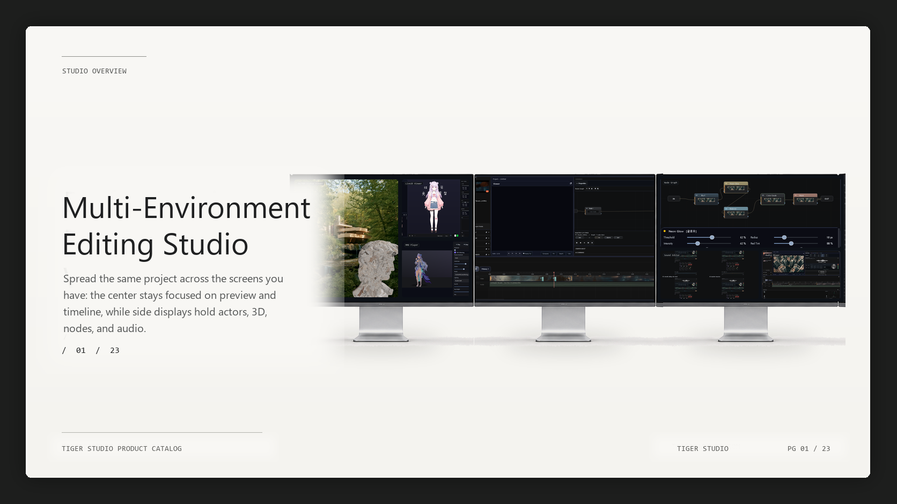

01
Polished screen recordings
Screen Studio-style cursor, zoom, click, hotkey, and export polish for tutorials and product videos.
Subculture-ready video editor for screen, shorts, and character creators.
Local-first creator video studio for Windows.
화면녹화, 쇼츠 편집, Live2D/Spine/MMD/VRM 캐릭터, 음성, 음악, 발표 페이지를 한 프로젝트에서 다루는 로컬 우선 영상편집 스튜디오입니다.
Watch Tiger Studio build an edited scene from imported clips through timeline cuts, node effects, color, blur, split compare, and final playback.
AI가 여러 영상 클립을 불러와 타임라인에 배치하고, 컷/전환/속도/노드 이펙트/컬러 그레이딩/블러/스플릿 비교를 거쳐 완성 장면까지 재생하는 과정을 보여줍니다.
Tiger Studio is organized around finished creator output, not isolated utility panels.
Screen Studio-style cursor, zoom, click, hotkey, and export polish for tutorials and product videos.
Live2D, Spine, MMD, and VRM actor tracks for edited videos, shorts, and avatar-driven scenes.
Captions, vertical templates, hooks, publish packages, and render queue handoff for creator workflows.
Voice Lab direction, Music Lab, subtitles, and PPT-style pages for explainer and character content.
A 30-second Tokyo night-view commentary scene with Japanese TTS, subtitles, Live2D motion, natural blink, and lip-sync.
도쿄 야경 클립 위에 일본어 TTS, 자막, Live2D 모션, 눈깜박임, 립싱크를 합성한 30초 캐릭터 영상 예시입니다.
Type the idea. Tiger Studio plans sections, notes, arrangement, and preview playback so non-composers can shape a classical cue instead of drawing every note by hand.
프롬프트 한 줄에서 악곡 구조, 오케스트라 레이어, 미리듣기 영상을 생성하고 타임라인에서 계속 수정할 수 있습니다.
AI creates an original moonlit concept, then Tiger Studio Painter rebuilds it through real brush actions, measured refinement, and an editable layer stack.
The reference is not pasted into the canvas. The finished work remains editable Painter strokes and layers rather than a disconnected generated-image preview.
A 10-second editorial collage rendered by Tiger Studio with isolated subject layers, animated newspaper fragments, track mattes, 2.5D camera depth, motion blur, and impact timing.
Tiger Studio의 편집 가능한 레이어와 모션 기능으로 인물, 신문 조각, 헤드라인을 합성한 10초 에디토리얼 모션 그래픽입니다.
Tiger Studio combines the main timeline with focused creation rooms. Availability and product limits are stated in the full public spec.
Media pool, preview, multi-track editing, clip tools, markers, transitions, typography, effects, and contextual inspection.
Screen capture, cursor sidecars, zoom planning, click rings, hotkey badges, framing, and polished screen-video export.
Color grading, scopes, effect graphs, masks, chroma key, background tools, tracking, and comparison views.
Project save/load, media relink, presets, proxies, render queue, batch export, health checks, and preview/export parity QA.
Keyframes, curves, behaviors, text animation, track mattes, paper collage, replicators, 2.5D camera depth, and MP4 export.
Editable canvas, brush strokes, layers, selection, transforms, import/export, and structured paint actions for AI-driven work.
Templates, document tools, media and 3D actors, element animation, PPTX/PDF/MP4 export, and best-effort PPTX import.
Prompt-to-arrangement, editable sections and notes, rendered previews and stems, MIDI export, mixing, and timeline delivery.
Audio tracks, waveform editing, cleanup and dynamics controls, automation, loudness helpers, buses, and mix diagnostics.
Provider catalog, subtitle-to-speech, generated WAV timeline tracks, actor lip-sync, dialogue takes, and optional local voice sidecars.
Folder scanning, Live2D/Spine/MMD/VRM classification, dependency diagnostics, readiness summaries, and one-click templates.
Live2D, Spine, MMD, and VRM assets become editable actor tracks with format-specific motion, material, and render controls.
Performance Source, avatar mapping, internal VRM Program Output, broadcast scene composition, and live-target preflight.
glTF/GLB/VRM preview, limited FBX conversion, PBR materials, HDR environments, gizmos, shadows, depth placement, and occlusion.
Image-to-material generation and plane preview for normal, height, AO, cavity, roughness, metallic, and packed Unreal maps.
An experimental Unreal-facing bridge for structured handoff and automation. It is not presented as full engine round-trip parity.
Structured namespaces cover timeline, media, NLE, paint, motion, PPT, music, TTS, actors, broadcast, AR/PBR, evidence, and UI.
Provider boundaries support local or connected planning while keeping edits inspectable and consequential actions reviewable.
Prompt-to-edit, prompt-to-deck, prompt-to-music, dialogue takes, motion generation, and paint operations use editable project data.
Real UI captures, export bake checks, compatibility matrices, performance probes, and product reports support release claims.
Tiger Studio is not trying to replace DaVinci Resolve, CapCut, OBS, Live2D Cubism, or VTube Studio directly. It brings the creator-facing parts together into one local editing workflow.
Resolve급 전문 후반작업 툴이나 Cubism 같은 모델 제작툴을 대체하는 것이 아니라, 캐릭터와 화면녹화, 쇼츠, 음성, 음악을 하나의 영상편집 흐름으로 묶는 것이 핵심입니다.
Current public claims stay tied to measured evidence. These scores describe readiness direction, not a promise that every professional workflow is complete.
Scroll through the catalog. The large preview updates as each product area comes into focus.

The same project can spread across preview, timeline, actors, 3D, nodes, and audio displays.
The editor surface: preview, timeline, media pool, workbench, and contextual controls.
Reviewable AI planning and structured actions instead of hidden one-shot mutations.
Timeline-native presentation pages with editable media, typography, and export paths.
Import, organize, inspect, and prepare project media before dropping it into the timeline.
Clip editing, tracks, timing, thumbnails, frame repair, and story structure in one place.
Effect presets and clip processing that stay connected to preview/export parity checks.
Timeline transitions and creator-style motion pieces for faster edit assembly.
Captions, titles, layout, and text animation as editable production elements.
Motion, timing, and parameter animation for precise creator edits.
LUTs, scopes, color metadata, and workflow checks for repeatable output.
A workbench surface for graph-based effects and compositing experiments.
Effect nodes, masks, and previewable processing chains for advanced edits.
Prompt-driven composition creates editable sections, chords, MIDI notes, and renderable stems.
Sound Editor, mix controls, loudness helpers, and production audio surfaces.
Curves, automation, dynamics, EQ, and diagnostics for shaping sound over time.
Character actors as timeline assets, with compatibility and render diagnostics.
VTuber avatar workflows, performance-source mapping, and broadcast output foundations.
PMX/PMD and VMD-oriented actor workflows for local character production.
3D object compositing, material controls, depth-aware placement, and render parity targets.
Short-form planning, caption beats, publish variants, and safe apply workflows.
Render queue, delivery presets, diagnostics, and export readiness checks.
The catalog closes with a compact release-safe map of the current product surface.
Public Windows downloads are temporarily paused while the current build is being validated for packaging, signing, and release-readiness gates.